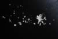

|
|
(For further information on spectroscopy, see:
http://speclab.cr.usgs.gov)
TITLE: Alunite RES-2 K Syn (450C) RES-2 DESCRIPT
DOCUMENTATION_FORMAT: MINERAL
SAMPLE_ID: RES-2
MINERAL_TYPE: Sulfate
MINERAL: K-Alunite(Alunite Group)
FORMULA: KAl3(SO4)2(OH)6
FORMULA_HTML: KAl3(SO4)2(OH)6
COLLECTION_LOCALITY: Not available
ORIGINAL_DONOR: Roger Stroffregen
CURRENT_SAMPLE_LOCATION: USGS Denver Spectroscopy Laboratory
ULTIMATE_SAMPLE_LOCATION: USGS Denver Spectroscopy Laboratory
SAMPLE_DESCRIPTION:
Synthetically prepared pure K-endmember sample made at 450C. Sample is 100% mole fraction K.
See Stroffregen, R.E., and C.N. Alpers, Observations on the unit-cell dimensions, H2O contents, and delD values of natural and synthetic alunite, American Mineralogist, 77, 1092-1098, 1992.
IMAGE_OF_SAMPLE:

END_SAMPLE_DESCRIPTION.
XRD_ANALYSIS:
see: Stroffregen, R.E., and C.N. Alpers, Observations on the unit-cell dimensions, H2O contents, and delD values of natural and synthetic alunite, American Mineralogist, 77, 1092-1098, 1992.
END_XRD_ANALYSIS.
COMPOSITIONAL_ANALYSIS_TYPE: NONE # XRF, EM(WDS), ICP(Trace),WChem
COMPOSITION_TRACE: None
COMPOSITION_DISCUSSION:
END_COMPOSITION_DISCUSSION.
MICROSCOPIC_EXAMINATION:
END_MICROSCOPIC_EXAMINATION.
SPECTROSCOPIC_DISCUSSION:
Sample has relatively strong vibrational features between 1.4 - 1.5, 1.77, and 2.0 - 2.24, 2.32, and a complex centered at 2.5 microns. Other pure K-endmember alunites prepared at lower temperatures have much weaker vibrational features.
END_SPECTROSCOPIC_DISCUSSION.
SPECTRAL_PURITY: 1a2_3_4_ # 1= 0.2-3, 2= 1.5-6, 3= 6-25, 4= 20-150 microns
| LIB_SPECTRA_HED: | where | Wave Range | Av_Rs_Pwr | Comment |
|---|---|---|---|---|
| LIB_SPECTRA: | splib05a r 588 | 1.3-5.3µm | 200 | g.s.= |
| LIB_SPECTRA: | splib06a r 1468 | g.s.= |
{kind=link}